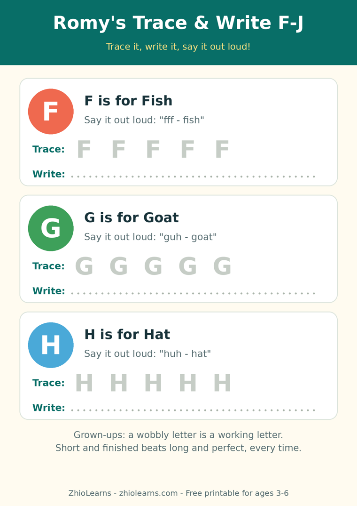

Write It on My Back: The No-Pencil Game That Teaches Letter Shapes
Hand a four-year-old a pencil and ask for the letter B, and you are not asking for one thing. You are asking for four: hold the pencil so it doesn’t roll away, press just hard enough — not too light, not tearing the page — remember where the shape begins, and then follow its route all the way round without lifting off in the wrong place.
When the result comes out wobbly, we tend to blame the letter knowledge. But watch closely: most children who “can’t write a B yet” can recognise a B perfectly well. It is the other three jobs — grip, pressure, and stamina — crowding out the one job that matters. So for a while, take the pencil out of the equation entirely.
The game: one letter, one finger, one back
Sit your child in front of you — on the sofa, in the bath, on your lap while dinner finishes — and trace one letter on their back with your finger. Big and slow, much bigger and slower than feels natural. Their only job is to feel the route and guess the letter.
Trace it. Down… and around… and around again. Narrate the journey quietly if it helps: “Down the tree, round the apple, round the orange.”
Say the sound. As you finish, add the letter’s sound — “buh” for B — so the shape and the sound arrive in the brain together.
Swap. Now they trace a letter on your back, and you guess — and you are warmly encouraged to get it gloriously, theatrically wrong.
Two or three letters is a full game. Stop while it’s still funny; a game that ends early gets asked for again tomorrow.
Why feeling a letter teaches it faster than copying one
Three quiet things are happening. First, the movement is big: the letter’s route is learned by the whole arm and back, not pinched into two small fingers, and big movements are remembered first. Second, there is no evidence: a back-letter leaves no mark, so a mistake evaporates instantly — nobody rubs a hole in the page, nobody sighs. And third, guessing switches attention fully on. To name a letter from feeling alone, a child has to hold its whole shape in mind — which is exactly the memory writing will need later.
Keep it gentle with three small rules: only play with letters your child has already met in a book or a song; trace at half the speed you first try; and if a letter keeps tricking them, don’t drill it — just let it be the “sneaky one” and meet it again in a story tonight.
From back, to air, to pencil
The game has a natural staircase built in. Back first, where the letter can be huge and secret. Then palm of the hand, where they can watch your finger as well as feel it. Then the air, traced big with a whole arm, like writing on an invisible board. And only then the pencil — at which point the shape is already known, and the pencil is just a new tool for an old friend.
That moment is easy to spot: your child starts tracing letters unprompted — on your arm in the car, on the steamed-up bathroom mirror, on your back while you’re trying to read. When the route lives in their body like that, paper stops being a test and becomes just another place to play the game.
A tracing book built for that next step
Romy’s Alphabet Adventure: Trace, Write & Say from A to Z was made for exactly this handover. For ages 3–6, it pairs big, traceable letters with room to try alone on the same page, and it asks children to say each letter out loud as they trace — tying the sound to the shape, the way the back game ties the feeling to the shape. Romy cheers from the corner of every page, and a finished letter feels like a small victory rather than a corrected exercise.
Play the back game tonight with the letter your child is proudest of. Then, when they’re ready for the pencil, try the free printable below: five letters, F to J, traced first and written after — the same kind route, now on paper.
🖨️ Free printable: Romy’s Trace & Write F–J

Trace each letter along its route, then write it on your own — F, G, H, I and J, two pages, ages 3–6, free, no sign-up needed to print it.
Download the free printable (PDF)📚 Today’s book
Find Romy’s Alphabet Adventure: Trace, Write & Say from A to Z and Romy’s other books in our little shop — and read Romy’s Alphabet Picnic free in the Storytime section.
See Romy’s books →🌿 More from the Parent Corner
The alphabet song is a melody, not letter knowledge. Our previous article shows why giving one letter a whole week of small everyday meetings makes it stick.
One Letter, All Week →